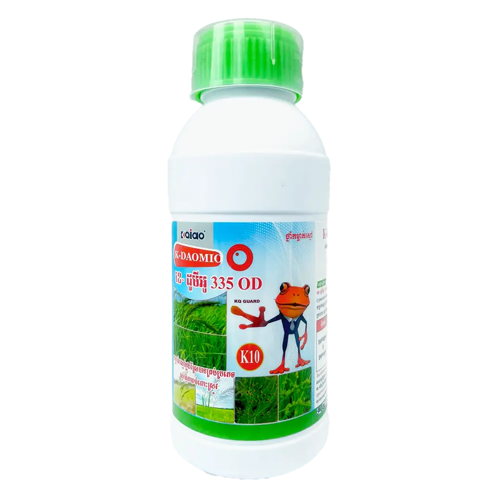
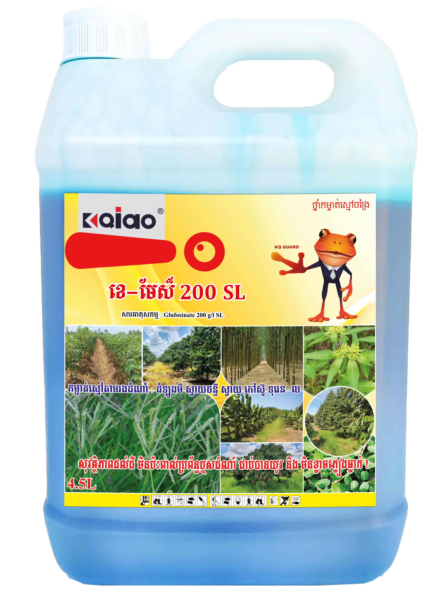
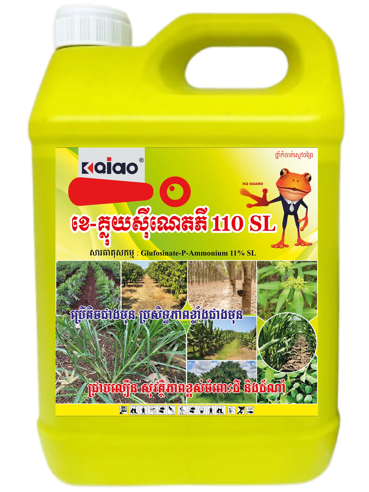
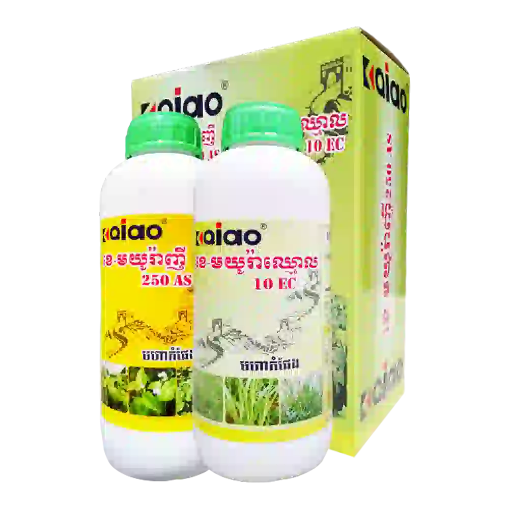
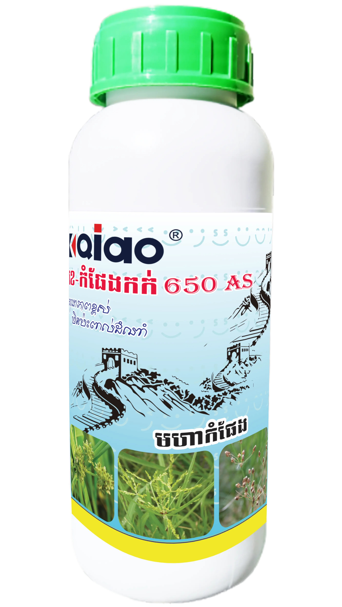
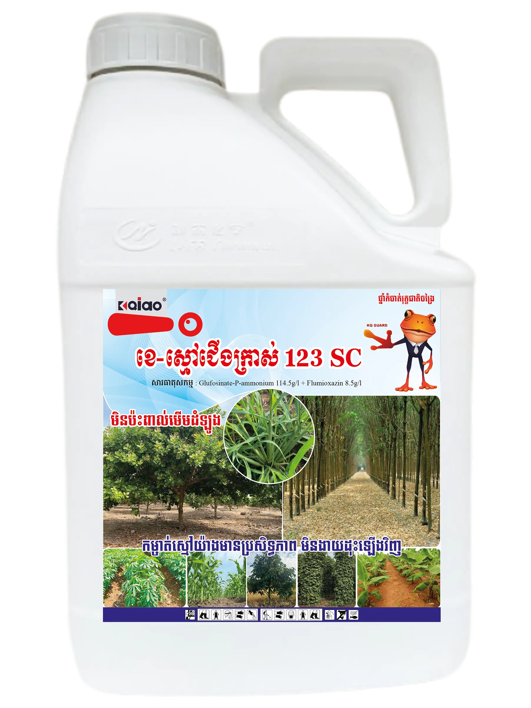
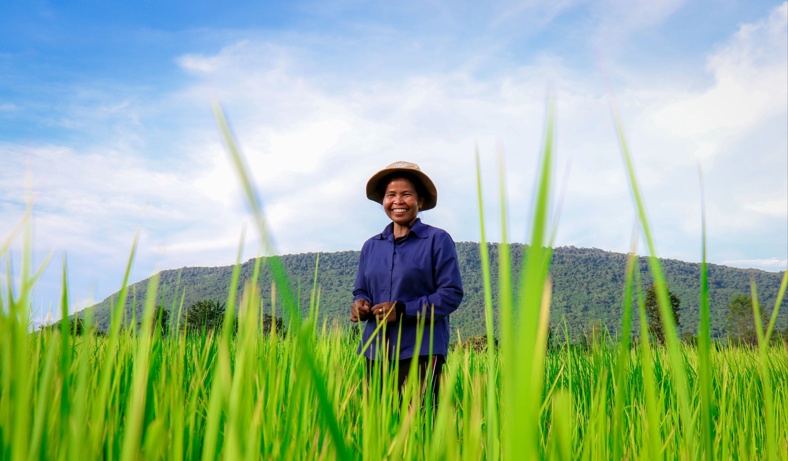

ខេ-ដូមីអូ 335OD
កម្ចាត់ស្មៅក្នុងស្រែគ្រប់ប្រភេទ សុវត្ថិភាពចំពោះស្រូវ
KANGQIAO ជាក្រុមហ៊ុនផលិតជីនិងថ្នាំកសិកម្មដែលមានប្រតិបត្តិការនៅជាង ៤០ប្រទេស និងតំបន់ជុំវិញពិភពលោក។ យើងបានបង្កើតដៃគូរយុទ្ធសាស្ត្រជាមួយក្រុមហ៊ុនជីនិងថ្នាំកសិកម្មល្បីៗជាច្រើន ដើម្បីផ្តល់ជូនផលិតផលដែលមានគុណភាពខ្ពស់ និងសមស្របនឹងតម្រូវការរបស់កសិករខ្មែរ។ KANGQIAO មានបុគ្គលិកជាង ៣០០នាក់ រួមបញ្ចូលបុគ្គលិកបច្ចេកទេស ទីផ្សារ និងអ្នកគ្រប់គ្រងជាន់ខ្ពស់ជាង១២០នាក់។ មូលដ្ឋានផលិតនៅស្រុកប៉ស៊ីងក្រុងពឹងចូវ ជាកម្មសិទ្ធិរបស់ឧទ្យានជាតិគីមីខេត្ត លើផ្ទៃដី ១០ ហិតា មានអាគាផលិតចំនួន ៤ និងអាគាផ្ទុកផលិតផលសម្រេច ចំនួន២ អាចផលិតប្រចាំឆ្នាំវត្ថុ ធាតុដើម ចំនួន ២,០០០តោន និងផលិតផលសម្រេចចំនួន ២០,០០០តោន។
រូបភាពផលិតផលខ្លះដែលមានចលនាសម្រាប់បង្ហាញនូវកម្រិតនៃជីនិងថ្នាំកសិកម្មរបស់យើង។

កម្ចាត់ស្មៅក្នុងស្រែគ្រប់ប្រភេទ សុវត្ថិភាពចំពោះស្រូវ

សុវត្ថិដល់ដី មិនប៉ះពាល់ដល់ប្រព័ន្ធឬសដំណាំជាប់បានយូរ និង មិនខ្លាចភ្លៀងធ្លាក់

ថ្នាំការពារកសិកម្មសម្រាប់ការកម្ចាត់ស្មៅ

ជួយឲ្យដំណាំស្រូវរឹងមាំ និងលូតលាស់ល្អ

ជំនាញកម្ចាត់កក់ និងស្មៅស្លឹកធំ ក្នុងស្រែ។

ជំនាញ់កម្ចាស់ស្មៅចាស់ ស្មៅក្រាស់ និងស្មៅខ្ពស់ៗ ជាពិសេសស្មៅជើងក្រាស់។
ប្រតិបត្តិការនៅជាង ៤០ប្រទេស និងតំបន់ជុំវិញពិភពលោក ជាដៃគូរយុទ្ធសាស្ត្រក្រុមហ៊ុនជីគីមីកសិកម្មល្បីៗជាច្រើន។ KANGQIAO មាន បុគ្គលិកជាង ៣០០នាក់ រួមបញ្ចូលបុគ្គលិកបច្ចេកទេស ទីផ្សារ និងអ្នកគ្រប់គ្រងជាន់ខ្ពស់ជាង១២០នាក់។ មូលដ្ឋានផលិតនៅស្រុកប៉ស៊ីងក្រុងពឹងចូវ ជាកម្មសិទ្ធិរបស់ឧទ្យានជាតិគីមីខេត្ត លើផ្ទៃដី ១០ ហិតា មានអាគាផលិតចំនួន ៤ និងអាគាផ្ទុកផលិតផលសម្រេច ចំនួន២ អាចផលិតប្រចាំឆ្នាំវត្ថុ ធាតុដើម ចំនួន ២,០០០តោន និងផលិតផលសម្រេចចំនួន ២០,០០០តោន។
ពេលអនាគត់ KANGQIAO នឹងលិចឡើងសេវាកម្មការពាររុក្ខជាតិដែលមានគុណភាពខ្ពស់ បម្រើកសិកម្ម បម្រើស្រុកភូមិ និងបម្រើពិភពលោក អោយកាន់តែប្រសើរ គោលដៅសាបព្រួសក្តីសង្ឃឹមបៃតងលើដីដ៏ធំល្វឹងល្វើយ និងនាំមកនូវក្តីរីករាយនៃការប្រមូលផលដល់កសិករាប់រយលាននាក់។

ក្រុមទីប្រឹក្សាកសិកម្មរបស់យើងរួចរាល់ជួយអ្នកគ្រប់ពេលវេលា។